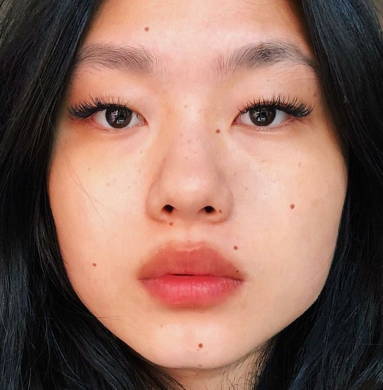

Forehead mole – ambition
Upper forehead – authority
Temple – travel destiny
Temple right – independence
Eyebrow – intelligence
Eyebrow tail – social charm
Between brows – strong will
Upper eyelid – emotional life
Eye corner – romantic nature
Under eye – sensitivity
Nose bridge – ambition
Nose tip – wealth luck
Nose wing – financial change
Cheek – responsibility
Cheekbone – authority
Under cheek – family support
Side cheek – independence
Upper lip – appetite for life
Lip corner – relationships
Lower lip – emotional depth
Chin – stability
Chin side – adaptability
Jawline – persistence
Jaw corner – determination
Lower jaw – endurance